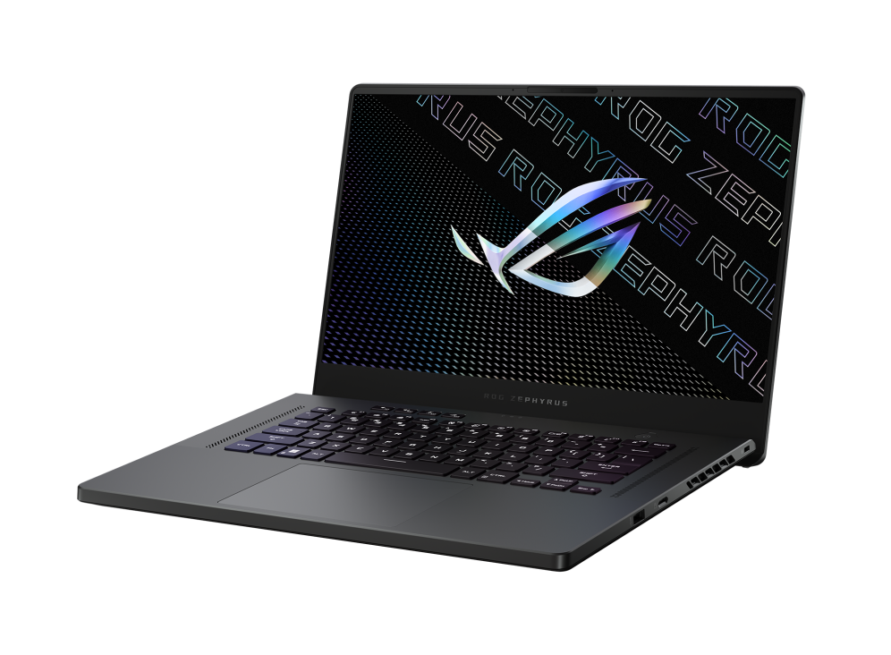

Zephyrus G15
REPUBLIC OF GAMERS제품을 다른 시선으로.
Zephyrus G15.
일상과 플레이, 그 사이의 균형.

빛의 각도에 따라 달라지는 컬러와 절제된 실루엣. 색상과 앞뒤 모습을 바꿔보세요.
ROG Zephyrus G15 · GA503 · 2022 디자인 기준개인 학습용 제품 디자인 실험 · 이미지 © ASUSTeK Computer Inc.제품 이미지 출처디자인 참고: Spyker Cars